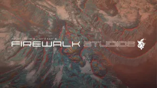

Sony Playstation Studios yeni bir oyun stüdyosu alıyor!
Sony, PlayStation Studios serisine bir stüdyo daha ekliyor. Şirket, bugün Firewalk Studios'u satın aldığını duyurdu. İşte detaylar!

2021 yılında Sony, yeni, orijinal çok oyunculu oyunu için hem Firewalk hem de ProbablyMonsters ile ortaklık yaptığını doğrulamıştı. Bugün Sony PlayStation Studios, Firewalk’ı bayrağı altına alarak ortaklığını genişletiyor.
Oyuncular için yeni bir deneyim!
PlayStation Stüdyoları Başkanı Hermen Hulst, PlayStation blogunda bu hamleyi duyururken şunları yazdı:
“2021 yılında ProbablyMonsters ve Firewalk ile yayıncılık ortaklığımızı duyurduğumuzdan bu yana, ekibin oyuncuları yeni ve yenilikçi yollarla birbirine bağlayan modern bir çok oyunculu oyun inşa etme tutkusundan etkilenmeye devam ediyoruz. “

“Stüdyo, olağanüstü bir oynanışa dayanan ilham verici dünyalar yaratma tutkumuzu paylaşıyor ve misyonlarına yatırım yapmaya devam etmek istiyoruz. Firewalk’ın teknik ve yaratıcı uzmanlığını PlayStation Studios’a taşıyarak canlı hizmet operasyonlarımızı büyütmesine ve oyuncular için gerçekten özel bir şey sunmasına yardımcı olacağı için heyecanlıyız.”
Firewalk Studios, Boston, Massachusetts’te yerleşik bir oyun stüdyosudur. Firewalk’un gerçekte ne üzerinde çalıştığına dair çok fazla bilgi bulunmuyor. Stüdyo 2018 yılında ProbablyMonsters’ın bir parçası olarak kuruldu ve AAA çok oyunculu bir oyun üzerinde çalışıyor.
Firewalk Studios’un arkasında eski Bungie geliştiricileri Tony Hsu ve Ryan Ellis de dahil olmak üzere bazı endüstri emektarları bulunuyor. Ayrıca, GamesIndustry.biz’e göre bu satın alma Firewalk’ın ProbablyMonsters’dan ayrılmasını sağlayacak.
Hsu ve Ellis bugün yaptıkları duyuruda şunları söyledi:
“Harika temel oynanışla dolu, hayranlık uyandıran yeni dünyalar ve deneyimler sunmak için sektördeki en ilham verici yeteneklerden bazılarını bir araya getirdik. Oyuncular için yeni bir şey inşa etmenin heyecanı ekibimize ve ortaklarımıza büyük enerji verdi ve her gün oyun testleri yapıyoruz.” Sony, Firewalk Studios’un yaratıcı vizyonu ve yeteneklerinden etkilendiğini ve gelecekteki projelerinde stüdyonun yaratıcı ekibinden yararlanacağını belirtiyor.
Siz bu birleşme hakkında ne düşünüyorsunuz? Oyun dünyası bu gelişmeden nasıl etkilenecek? Yorumlarda buluşalım